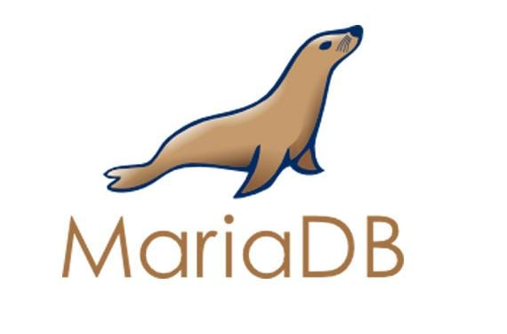
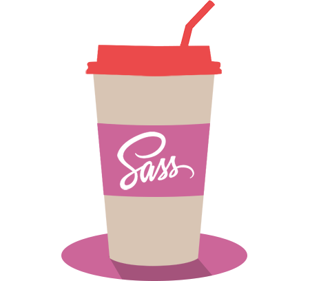
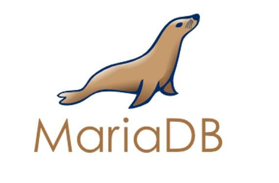
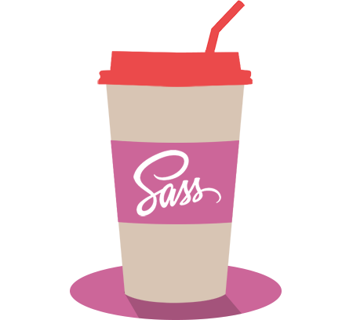
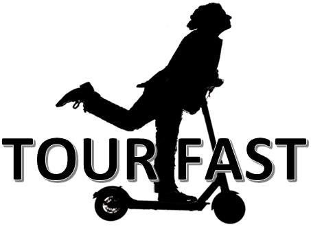
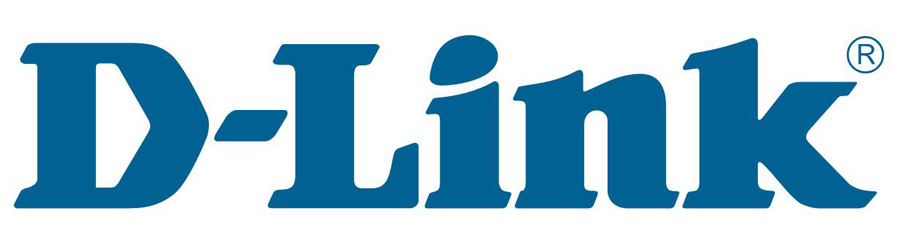
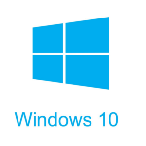
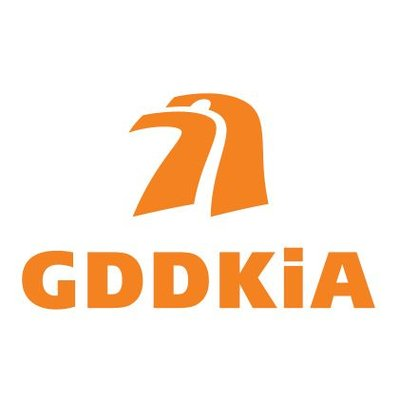
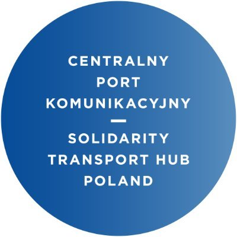

Nawet z pozoru najdziwaczniejsza, najskromniejsza pasja jest czymś bardzo, ale to bardzo cennym.
- Stephen King
Projekty
Poniższa tabela stanowi wykaz moich projektów zrealizowanych w ostatnich latach. Projektom zostały nadane nazwy robocze wraz z podaniem nazw wykorzystanych technologii. W tabeli znajdują się odnośniki do repozytariów na github lub do opublikowanych witryn.
| Projekt | Technologia | Opis | Link | |
|---|---|---|---|---|
| Kobuszewski.com |


|
 |
||
|
Opis projektu "Kobuszewski.com": Strona powstała podczas pandemii COVID19 w celu praktycznego zapoznania się z frameworkiem Bootstrap 4 oraz React. Dodatkowo mając więcej czasu chciałbym pomóc firmom w przeniesieniu się z ich działalnością do sieci i stąd potrzebne mi portofolio zamieszczone na tej stronie. |
||||
| Napędzamy Transport 4.0 |
 



|
|
||
|
Opis projektu "Napędzamy Transport 4.0": Projekt strony inicjatywy, której celem jest wprowadzenie zarządzania mobilnością w Polsce opartej na współpracy śrdowisk kształtujących mobilność przy wiodącej roli społeczności korzytającej systemu transportowego. |
||||
| Tourfast.pl |
|
 | ||
|
Opis projektu "TourFast.pl": Strona zrealizowana dla start-upu, oferującego szybkie zwiedzanie miasta stołecznego Warszawy w nowoczesny i szybki sposób na hulajnogach elektrycznych. |
||||
| Coders Lab |
|
|
|
|
|
Opis projektu "Coders Lab": Coders Lab to szkoła programowania, którą ukończyłem w 2018 roku. Zajęcia prowadzone były w trybie dziennym w formie intensywnego bootcampu przez 2 miesiące z cotygodniowymi egzaminami. Szkoda, że się już skończyły... :-) Każdemu polecam taką przygodę. Z uwagi na prawa autorskie Szkoły dostęp do repo na github mocno ograniczyłem. |
||||
| Sieć wewnętrzna |


|
------- | ||
|
Opis projektu "Sieć wewnętrzna": Sieć wewnętrzna to codzienne czynności związane z administracją urządzeniami domowymi w tym serwerami i komputerami z systemami linux, windows 10 oraz domowymi urządzeniami z własnym autorskim oprogramowaniem. |
||||
| IT Service Management |   | ------- | ||
|
Opis projektu "IT Service Management": Zarządzanie usługami IT w transporcie towarzywszy mi przez całe życie zawodowe. Zaczynałem pracę przy systemie radiokomunikacji GSM-R dla kolei, następnie pracowałem w systemach ITS w drogownictwie, a obecnie zajmuję się usługami integrującymi gałęzie transportu. |
||||
Umiejętności
Edukacja
- Skills sp. z o.o. – Prince2 Practitioner Certificate – 2019 r.
- Coders Lab – Junior Programmer Certificate – 2018
- Warsaw University of Technology (Politechnika Warszawska), Transport Division, Telecommunication in Transport (ITS)
Szkolenia
- 2019 ITIL v.3 Transition - Szkolenie wewnętrzne
- 2017 IT Manager Academy - IT Leader Club Polska
- 2017 Expert Business Process Management – Altkom
- 2017 Service Oriented Architecture – Altcom
- 2017 Togaf – prof. Andrzej Sobczak
- 2017 Montreal World ITS Congress
- 2016 IT Agreements – Maruta Wachta sp.j. – Law office
- 2016 Service Design – Prime Minister Office
- 2015 ITIL v.3 – CTPartners
- 2015 Detroit World ITS Congress
- 2010, 2012 FRAME Architecture
Języki obce
- English - very good
- German - comunicative
- French - basic